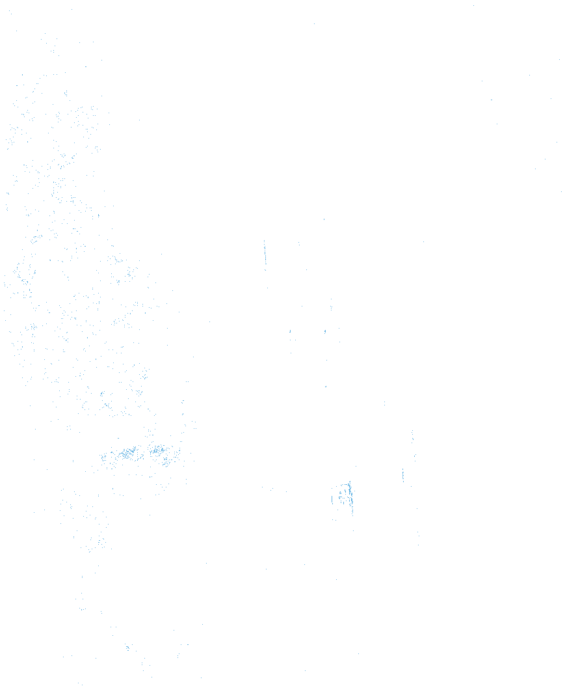
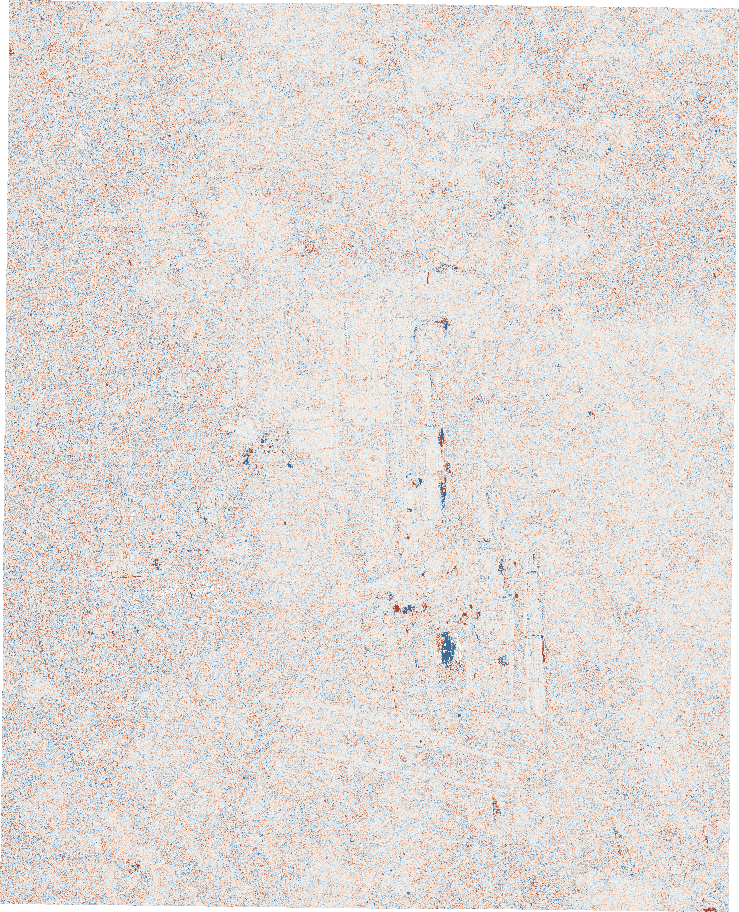
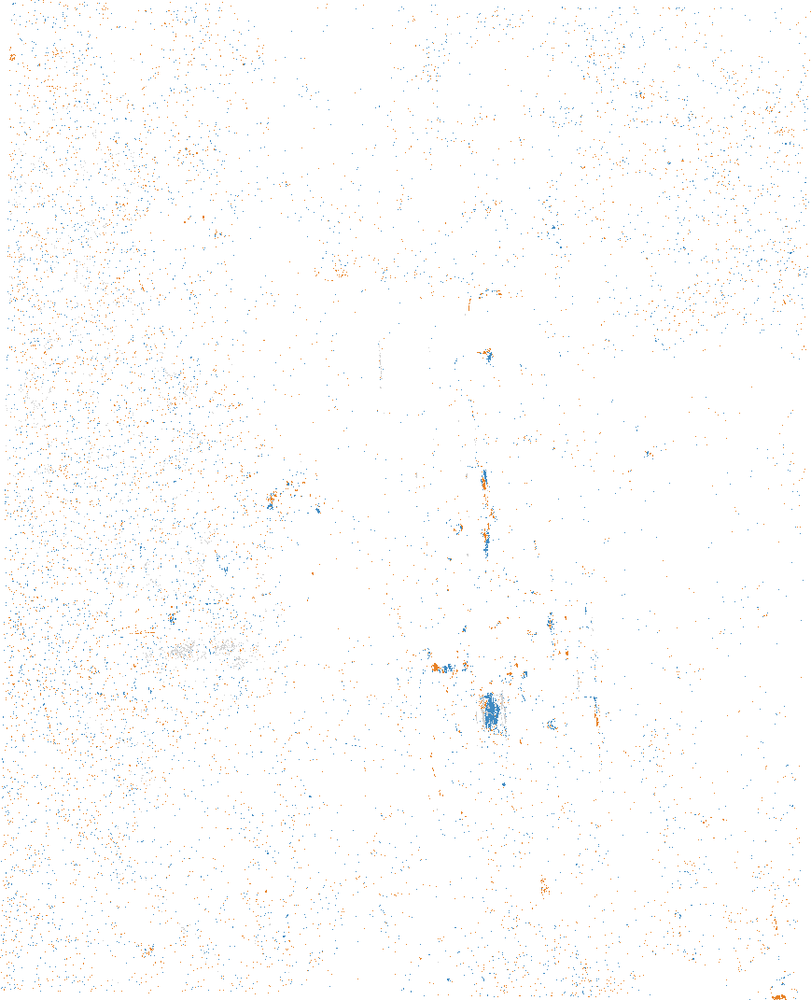

Exécution 20261116T131850Z · protocole 1.0.0 (figé le 2026-11-16) · données NISAR L2 GCOV (gamma-0), Sentinel-2 L2A
État : carte historique (revue humaine en attente). Source : OpenStreetMap way 638354631 (landuse=quarry), version 3 (2020-02-10), 39.548 km². Ce n'est ni une concession, ni une zone autorisée, ni une limite d'exploitation. Incertitude de position : non estimée. Les installations, excavations, verses et bassins ne sont pas séparés.
| Géométrie | Lot | Collection / CRID | Dates utilisables | Dates rejetées | Lacunes |
|---|---|---|---|---|---|
| 044A_F018 ascending | main | NISAR_L2_GCOV_PROVISIONAL_V1 / P05023 | 10/10 | — | 2026-07-23 → 2026-08-16 (24 j, lacune instrument documentée) |
| 023D_F072 descending | main | NISAR_L2_GCOV_PROVISIONAL_V1 / P05023 | 8/9 | 2026-09-07 (non focalisé (masque produit)) | 2026-07-21 → 2026-08-14 (24 j, lacune instrument documentée) |
| 023D_F072 descending | extension | NISAR_L2_GCOV_V1 / P05036 | 2/2 | — | — |
Chaque pixel porte des raisons de non-observation (bits) : hors acquisition, non focalisé, anomalie instrumentale, valeur invalide, proche du plancher de bruit, couverture insuffisante des sous-pixels. Les couches sont exportées en GeoTIFF (rasters/quality_*.tif).
Observable principal : Δγ⁰ (HH) = 10·log₁₀(γ⁰ après / γ⁰ avant), moyenne en puissance linéaire avant conversion en dB, grille de 20 m (échantillons natifs de 10 m). Le signalement compare un couple à la médiane de couples homogènes de même durée qui ne partagent aucune acquisition ; sinon : « référence temporelle insuffisante ».
| Fenêtre | Orbite | Durée | Δ périmètre − témoin (dB) | Référence | Rapport signalé (IC 95 %) | Dév. |
|---|---|---|---|---|---|---|
| 2026-06-17 → 2026-06-29 | ascending | 12 j | -0.03 | 6 couples | 2.14 [1.56 ; 2.93] | oui |
| 2026-06-29 → 2026-07-11 | ascending | 12 j | -0.04 | 5 couples | 1.62 [1.02 ; 2.39] | |
| 2026-07-11 → 2026-07-23 | ascending | 12 j | -0.01 | 6 couples | 1.60 [0.84 ; 2.65] | |
| 2026-07-23 → 2026-08-16 | ascending | 24 j | -0.01 | insuffisante | — | |
| 2026-08-16 → 2026-08-28 | ascending | 12 j | 0.02 | 6 couples | 1.29 [0.70 ; 2.10] | oui |
| 2026-08-28 → 2026-09-09 | ascending | 12 j | -0.21 | 5 couples | 1.31 [0.84 ; 1.89] | |
| 2026-09-09 → 2026-09-21 | ascending | 12 j | -0.07 | 5 couples | 1.20 [0.74 ; 1.84] | |
| 2026-09-21 → 2026-10-03 | ascending | 12 j | 0.24 | 5 couples | 1.61 [1.00 ; 2.43] | |
| 2026-10-03 → 2026-10-15 | ascending | 12 j | 0.01 | 6 couples | 1.62 [0.95 ; 2.53] | |
| 2026-06-27 → 2026-07-09 | descending | 12 j | -0.04 | 3 couples | 2.55 [2.02 ; 3.25] | |
| 2026-07-09 → 2026-07-21 | descending | 12 j | 0.02 | 3 couples | 3.31 [2.60 ; 4.25] | |
| 2026-07-21 → 2026-08-14 | descending | 24 j | 0.00 | insuffisante | — | |
| 2026-08-14 → 2026-08-26 | descending | 12 j | -0.09 | 4 couples | 2.62 [1.99 ; 3.48] | |
| 2026-08-26 → 2026-09-07 (rejetée) | descending | 12 j | n. d. | — | — | |
| 2026-09-07 → 2026-09-19 (rejetée) | descending | 12 j | n. d. | — | — | |
| 2026-09-19 → 2026-10-01 | descending | 12 j | 0.09 | 3 couples | 1.10 [0.69 ; 1.68] | |
| 2026-10-01 → 2026-10-13 | descending | 12 j | -0.13 | 3 couples | 2.79 [2.15 ; 3.68] | |
| 2026-10-25 → 2026-11-06 | descending | 12 j | 0.14 | insuffisante | — |
« Dév. » : fenêtre déjà examinée dans l'étude v2 (données de développement, pas un échantillon d'évaluation indépendant). Les intervalles sont conditionnels au protocole (blocs de 1 km) ; ils ne couvrent ni le choix du témoin, ni la géométrie, ni l'interprétation.



Contexte (observable différent, cohérence GUNW v2) : rapport 2.08, intervalle [0.85 ; 4.44].
Optique stricte (≤ 3 j) : 3 comparaisons radar, 2 couple(s) Sentinel-2 distinct(s), 2 dont l'intervalle du rapport dépasse 1. Les comparaisons qui partagent les deux mêmes scènes forment un seul appui temporel.
| Groupe | Avant | Après | Fenêtres radar |
|---|---|---|---|
| O1_strict | S2C_29SPR_20260614_0_L2A | S2B_29SPR_20260629_0_L2A | GCOV_044A_F018_20260617_20260629_P05023 |
| O2_strict | S2C_29SPR_20260813_0_L2A | S2B_29SPR_20260828_0_L2A | GCOV_044A_F018_20260816_20260828_P05023, GCOV_023D_F072_20260814_20260826_P05023 |
Optique exploratoire (≤ 8 j) : 8 comparaisons radar, 5 couple(s) Sentinel-2 distinct(s), 5 dont l'intervalle du rapport dépasse 1. Les comparaisons qui partagent les deux mêmes scènes forment un seul appui temporel.
| Groupe | Avant | Après | Fenêtres radar |
|---|---|---|---|
| O1_exploratory | S2C_29SPR_20260614_0_L2A | S2B_29SPR_20260629_0_L2A | GCOV_044A_F018_20260617_20260629_P05023 |
| O2_exploratory | S2A_29SPR_20260626_1_L2A | S2C_29SPR_20260714_0_L2A | GCOV_044A_F018_20260629_20260711_P05023, GCOV_023D_F072_20260627_20260709_P05023 |
| O3_exploratory | S2C_29SPR_20260704_0_L2A | S2B_29SPR_20260729_0_L2A | GCOV_044A_F018_20260711_20260723_P05023, GCOV_023D_F072_20260709_20260721_P05023 |
| O4_exploratory | S2C_29SPR_20260813_0_L2A | S2B_29SPR_20260828_0_L2A | GCOV_044A_F018_20260816_20260828_P05023, GCOV_023D_F072_20260814_20260826_P05023 |
| O5_exploratory | S2A_29SPR_20260825_1_L2A | S2C_29SPR_20260912_0_L2A | GCOV_044A_F018_20260828_20260909_P05023 |
Références indépendantes : état en attente d'annotations. Unités de 3 × 3 cellules d'analyse (60 m), tirées d'une graine enregistrée, stratifiées selon le statut radar. Échantillon tiré : signalées dans le périmètre = 40, non signalées dans le périmètre = 40, signalées dans le témoin = 33, non signalées dans le témoin = 40, non observables = 35. Annotations comptées : 0. Manque : annotations renseignées par une personne indépendante; fichier de métadonnées de l'annotation (relecteur, méthode, droits). Sans référence évaluée, aucune précision ni validation n'est annoncée.
| Zone | Surface | Variation radar mesurée | Changement optique visible | Cause |
|---|---|---|---|---|
| study | 39.544 km² | mesurée : 5/13 fenêtres au-dessus du témoin (fraction médiane signalée 0.016) ; Δ médian vs témoin -0.02 dB | visible sur un seul couple optique (1/2 couples ; 1 soutenu(s) aussi hors fenêtres de développement) | aucune cause documentée ; indéterminée |
| control_1_2km | 41.303 km² | mesurée : 0/13 fenêtres au-dessus du témoin (fraction médiane signalée 0.009) ; Δ médian vs témoin -0.00 dB | non visible (taux non supérieur au témoin) (0/2 couples ; 0 soutenu(s) aussi hors fenêtres de développement) | aucune cause documentée ; indéterminée |
| control_2_4km | 105.156 km² | mesurée : 0/13 fenêtres au-dessus du témoin (fraction médiane signalée 0.011) ; Δ médian vs témoin 0.00 dB | non visible (taux non supérieur au témoin) (0/2 couples ; 0 soutenu(s) aussi hors fenêtres de développement) | aucune cause documentée ; indéterminée |
| panels_outside | 2.389 km² | mesurée : 3/13 fenêtres au-dessus du témoin (fraction médiane signalée 0.015) ; Δ médian vs témoin -0.03 dB | visible sur un seul couple optique (1/2 couples ; 1 soutenu(s) aussi hors fenêtres de développement) | aucune cause documentée ; indéterminée |
| Z1 | 0.306 km² | mesurée : 13/13 fenêtres au-dessus du témoin (fraction médiane signalée 0.237) ; Δ médian vs témoin -0.55 dB | visible sur au moins deux couples optiques distincts (2/2 couples ; 1 soutenu(s) aussi hors fenêtres de développement) | aucune cause documentée ; indéterminée |
| N1 | 0.061 km² | mesurée : 13/13 fenêtres au-dessus du témoin (fraction médiane signalée 0.626) ; Δ médian vs témoin -0.63 dB | visible sur au moins deux couples optiques distincts (2/2 couples ; 1 soutenu(s) aussi hors fenêtres de développement) | aucune cause documentée ; indéterminée |
| N2 | 0.023 km² | mesurée : 12/13 fenêtres au-dessus du témoin (fraction médiane signalée 0.456) ; Δ médian vs témoin -0.22 dB | visible sur au moins deux couples optiques distincts (2/2 couples ; 1 soutenu(s) aussi hors fenêtres de développement) | aucune cause documentée ; indéterminée |
| N3 | 0.020 km² | mesurée : 13/13 fenêtres au-dessus du témoin (fraction médiane signalée 0.540) ; Δ médian vs témoin 0.37 dB | visible sur un seul couple optique (1/2 couples ; 1 soutenu(s) aussi hors fenêtres de développement) | aucune cause documentée ; indéterminée |
| N4 | 0.014 km² | mesurée : 12/13 fenêtres au-dessus du témoin (fraction médiane signalée 0.457) ; Δ médian vs témoin -0.36 dB | visible sur un seul couple optique (1/2 couples ; 1 soutenu(s) aussi hors fenêtres de développement) | aucune cause documentée ; indéterminée |
Z1 est une zone à vérifier, pas une excavation démontrée. Hypothèses alternatives : humidité, végétation ou culture, rugosité, opérations, calibration instrumentale. Ni minerai, teneur, volume, production, danger de digue, vitesse annuelle ou déplacement vertical ne sont déduits de ces résultats.
Contrat 3.0 ; protocole sha256 fb78392cd275ce71… ; le manifeste (study.json → manifest) relie chaque sortie à ses entrées hachées.